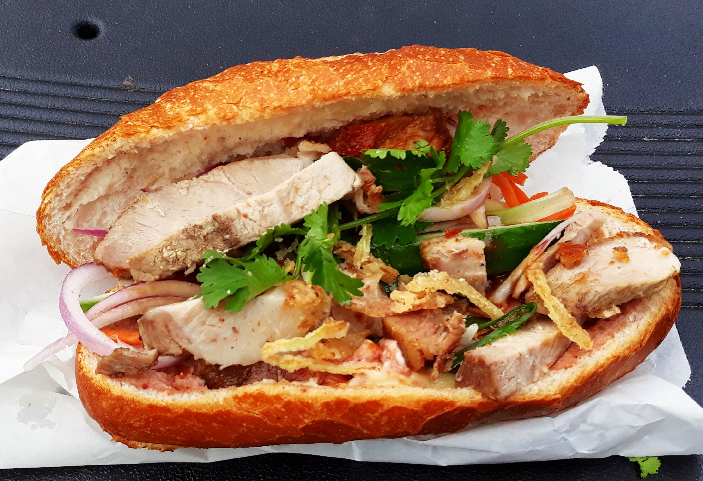

Bánh Mì
Back to Home

“[food] Banh Mi” by Caspia Jackmanson, CC BY 2.0
Description
Bánh mì is a renowned Vietnamese staple food. It is a short baguette with thin, crisp crust and a soft, airy texture, usually made with mixed rice flour and wheat flour. Similar to a submarine sandwich, it is often split lengthwise, filled with meat and savory ingredients and served as a meal, called bánh mì thịt, but can also be eaten in plain.
A typical Vietnamese roll or sandwich is a fusion of proteins and vegetables from native Vietnamese cuisine such as chả lụa (Vietnamese sausage), coriander (cilantro), cucumber, pickled carrots, and pickled daikon combined with condiments from French cuisine such as pâté, along with red chili and mayonnaise. However, a variety of popular fillings are used, like xá xíu (Chinese barbecued pork), xíu mại (Vietnamese minced pork), nem nướng (grilled pork sausage), đậu hũ (tofu), and even ice cream, which is more of a dessert. In Vietnam, bread rolls and sandwiches are typically eaten for breakfast or as a snack.
Ingredients
- ½cup rice vinegar
- ¼ cup white sugar
- ¼ cup water
- ¼ cup matchstick-cut carrots
- ¼ cup peeled and matchstick-cut daikon radish
- ¼ cup thinly sliced white onion
- 1 skinless, boneless chicken breast half
- 1 pinch garlic salt, or to taste
- ground black pepper to taste
- 1 (12 inch) French baguette
- 4 tablespoons mayonnaise
- ¼ cup thinly sliced cucumber
- 1 tablespoon fresh cilantro leaves
- 1 small jalapeño pepper, cut into 1/16-inch-thick matchsticks
- 1 wedge lime
Steps
- Gather all ingredients.
- Combine rice vinegar, sugar, and water in a small saucepan. Bring to a boil over medium heat, stirring until sugar has dissolved, about 1 minute. Allow to cool.
- Place carrots, radish, and onion in a medium bowl. Pour in cooled vinegar mixture and let marinate for at least 30 minutes.
- While vegetables marinate, set an oven rack about 6 inches from the heat source and preheat the oven’s broiler. Lightly oil a slotted broiler pan. Season chicken breast with garlic salt and pepper.
- Place chicken on the prepared pan and cook under the preheated broiler, turning once, until browned and no longer pink in the center, about 6 minutes per side.
- Place chicken on a cutting board. Cut into bite-sized pieces.
- Slice baguette in half lengthwise. Pull out the soft center of bread, leaving a cavity for fillings.
- Lightly toast baguette under the broiler, 2 to 3 minutes.
- Drain off excess vinegar mixture after vegetables have marinated.
- To assemble the sandwich, spread each half of toasted baguette with mayonnaise. Layer chicken on the bottom half of the bread. Top with cucumber, drained pickled vegetables, cilantro, and jalapeño. Squeeze lime wedge over fillings and cover with top half of baguette.
- Cut into two 6-inch sandwiches to serve.
Back to Home